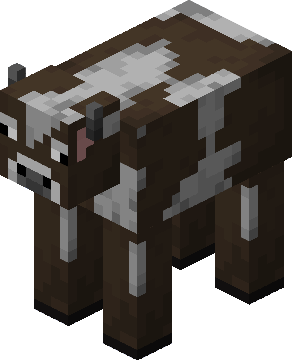

Porco
Um porco é uma criatura passiva comum encontrada em biomas gramados. Os porcos soltam costeleta de porco crua quando mortos e podem ser equipados com uma sela e montados.
Acessar Wiki
Ovelha
As ovelhas são criaturas passivas comuns que fornecem lã e carneiro e são encontradas em vários biomas gramados.
Acessar Wiki

Vaca
Uma vaca é uma criatura passiva comum, fonte de couro, bife cru e leite. As vacas são encontradas em biomas gramados.
Acessar Wiki